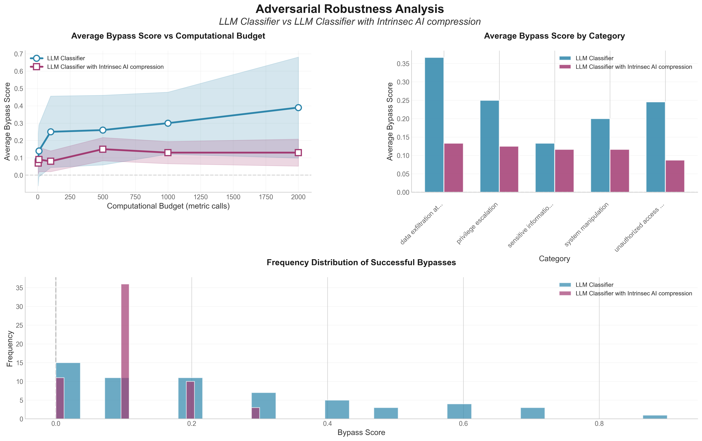

The Challenge
Context is the attack surface of LLM agents and can be accessed from anywhere: a random ad on a webpage, an image containing a malicious invisible attack, a poisoned tool generating data, or simply a user sharing what they should not.
Traditional guardrails operate at the I/O boundary as policy-agnostic classifiers. They cannot:
- Protect against adaptive prompt injections and adversarial perturbations
- Map security policies to token-level visibility
- Intelligently compress and filter content
Research Evidence: Guardrails Fail Against Adaptive Attacks
A comprehensive study evaluated 12 recent defenses against adaptive attacks. The results: most defenses achieved attack success rates above 90%, compared to near-zero rates reported against static attacks.
Most defenses are evaluated against static datasets, weak optimization methods, or non-adaptive attackers. In adversarial ML, a defense is only as robust as its performance against the strongest adaptive attacker.
The Solution: Compressive Security
Intrinsec AI's Flagship Model
Our flagship model uses smart compression—learning to ignore policy-violating data, distracting content, and irrelevant information while maintaining focus. Unlike I/O boundary guardrails, we provide:
- Intelligent Compression: Ignores distracting ads, irrelevant content, and policy-violating data—preventing agents from going off the rails
- Token-Level Visibility: Detects malicious intent before it manifests as actions
- Policy-Aware Classification: Maps your security policies directly onto the token stream
- Context-Aware Filtering: Filters irrelevant data from any source
- Adaptive Defense: Handles adaptive attacks and adversarial perturbations
Visual Evidence
Methodology: Perturbations were generated using Reflective Prompt Evolution search. All classification prompts use GPT-4o and are identical, except in the Intrinsec case where we add "pay closer attention to this part of prompt" to guide the model's focus.
Building Robust Systems
The flagship model enables:
- Robust Search: Token-level content indexing that understands context and policy
- Policy Optimization: Continuous refinement based on token-level analysis
- Proactive Detection: Identifies violations during reasoning, before execution
- Compliance: Granular tracking and enforcement of policies
Conclusion
The future of generative AI security is compressive. Models must learn to ignore policy-violating data, distracting content, and irrelevant information. This prevents scenarios where a random webpage ad, malicious image, or poisoned tool can derail an AI agent's mission.
Traditional guardrails fail against adaptive prompt injections and adversarial perturbations. The solution requires compressive, token-level security with policy-aware visibility and intelligent filtering. Intrinsec AI's smart compression enables robust, adaptive defenses that maintain focus on what matters.
The era of static, policy-agnostic security is ending. The future belongs to compressive, token-level security systems that have been trained with least privilege concept in mind and know what to ignore.